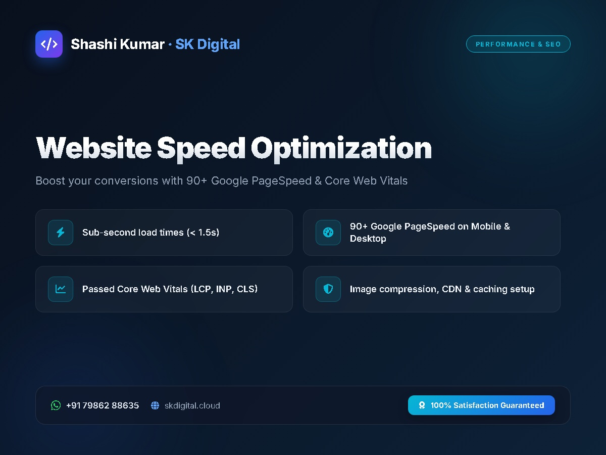

A slow Shopify store makes shopping feel frustrating. Visitors wait for high-resolution product galleries to load, struggle with sluggish drop-down filters, or tap an Add to Cart button that responds after a perceptible delay. If you want to speed up your Shopify store, the solution is almost never installing another "one-click speed optimizer" app from the Shopify App Store. The real fix begins by diagnosing what is actually blocking the browser thread and fixing the highest-impact bottlenecks at the code level.
In this comprehensive Shopify speed optimization guide, I share the exact engineering methodology I use at SK Digital to audit app bloat, clean up orphaned Liquid code, optimize critical rendering paths, and pass Google's Core Web Vitals. While targeting a Shopify PageSpeed 90+ score is a solid benchmark, real shopper experience and checkout fluidity are what ultimately scale revenue.
- 1. Why Shopify Store Speed Directly Dictates Revenue
- 2. Understanding Shopify Core Web Vitals (LCP, INP & CLS)
- 3. Audit Apps & Eliminate Shopify App Bloat
- 4. Fixing a Slow Shopify Theme & Bloated Assets
- 5. Liquid Code Profiling & Server Render Cleanup
- 6. Modern Image, Video & Web Font Optimization
- 7. Reducing Render-Blocking Scripts & Third-Party Tags
- 8. Step-by-Step Shopify Speed Audit Checklist
- 9. Does a Faster Store Improve Checkout Conversion Rates?
- Frequently Asked Questions
1. Why Shopify Store Speed Directly Dictates Revenue
Page load performance affects how quickly prospective customers see your products, understand your value proposition, and interact with your storefront. Shopify's internal performance engineering documents identify 5 core factors that degrade storefront performance:
- Third-party apps and tracking pixels: Injecting heavy JavaScript bundles into the global DOM on every page load.
- Bloated theme code: Complex JavaScript sliders, mega-menus, and unnecessary CSS frameworks.
- Unoptimized visual assets: Massive multi-megabyte PNG/JPEG uploads that stall above-the-fold rendering.
- Expensive Liquid loops: Deep nested loops in template files that spike server rendering latency.
- External web fonts: Multiple custom font weights that cause Flash of Invisible Text (FOIT) or sudden layout shifts.
More features do not automatically equal more revenue: every widget and script must justify its existence by demonstrably lifting sales or streamlining operations.
2. Understanding Shopify Core Web Vitals (LCP, INP & CLS)
Google evaluates user experience based on three strict Core Web Vitals thresholds assessed at the 75th percentile of real-world visits:
| Metric | Good Threshold | What It Measures on a Shopify Store |
|---|---|---|
| LCP (Largest Contentful Paint) | ≤ 2.5 seconds | How quickly the main above-the-fold product or hero banner renders. |
| INP (Interaction to Next Paint) | < 200 ms | How snappy the page responds when a customer taps "Add to Cart", opens filters, or toggles variant options. |
| CLS (Cumulative Layout Shift) | < 0.1 | Whether elements jump unexpectedly while late-loading apps or banners pop in. |
3. Audit Apps & Eliminate Shopify App Bloat
App bloat is the #1 culprit behind slow Shopify stores. In client audits at SK Digital, I frequently encounter stores with 25+ installed apps, of which only 8 are genuinely active.
Step-by-step app audit workflow:
- Compile a complete inventory: List every installed app, who installed it, its monthly cost, where it executes, and its direct revenue impact.
- Identify duplicate functions: Merge multiple apps doing similar jobs (e.g., separate apps for popups, review widgets, announcement bars, and currency converters).
- Scope script execution: Review whether an app's script is loading sitewide when it only needs to run on the product detail page or order status page.
- Clean up orphaned code: Uninstalling an app from the Shopify admin does not automatically remove its injected code snippets inside
theme.liquid. Inspect your asset files and manually purge abandoned app snippets.
4. Fixing a Slow Shopify Theme & Bloated Assets
A theme cluttered with excessive sections, nested slider libraries (like Swiper or Slick initialized multiple times), and unminified bundles delays interaction. When conducting a Shopify slow theme fix:
- Always work in a duplicate theme: Never make performance code modifications directly on your published production theme. Test all changes in an unpublished preview.
- Evaluate Shopify Dawn vs. Legacy Themes: Modern Shopify Online Store 2.0 reference themes (such as Dawn) are engineered to minimize client-side JavaScript. If your store relies on a 5-year-old theme, migrating to an OS 2.0 foundation can instantly slash page weight by 40%–60%.
5. Liquid Code Profiling & Server Render Cleanup
Liquid is Shopify’s server-side templating engine. While Shopify's cloud infrastructure is fast, inefficient Liquid code causes high Time to First Byte (TTFB) and slow server response.
Avoid looping over entire product collections inside template components. Instead of running nested {% for variant in product.variants %} checks across dozens of items, leverage Shopify's built-in filtering filters and paginate collections cleanly.
6. Modern Image, Video & Web Font Optimization
E-commerce stores depend on compelling visual media, but unoptimized media will cripple mobile PageSpeed scores:
- Prioritize your LCP Image: Never apply
loading="lazy"to your primary above-the-fold hero image or main product photo. Addfetchpriority="high"so the browser fetches it immediately. - Specify exact width and height attributes: Providing explicit dimensional aspect ratios prevents Cumulative Layout Shift (CLS).
- Leverage WebP/AVIF formats: Shopify automatically transcodes uploaded images into modern formats when requested with Liquid filters like
{{ image | image_url: width: 800, format: 'pjpg' }}. - Limit custom web fonts: Stick to 1–2 system font families or preloaded variable fonts using
font-display: swap;.
7. Reducing Render-Blocking Scripts & Third-Party Tags
Heavy third-party tags (heatmaps, multi-channel pixels, chat widgets) freeze the main execution thread. Keep the following rules in mind:
- Use defer or async: Load non-critical analytics and social pixels with
deferso they do not interrupt DOM parsing. - Audit Google Tag Manager (GTM): Remove legacy tags from past marketing campaigns that continue firing unnoticed.
- Lazy-load customer chat widgets: Load heavy live-chat scripts (e.g., Zendesk, Gorgias, Tidio) only after user interaction or on a 4-second delay.
8. Step-by-Step Shopify Speed Audit Checklist
Follow this actionable checklist to benchmark your optimization progress:
- Capture baseline mobile and desktop scores on PageSpeed Insights and Chrome UX Report.
- Test homepage, top collection page, top product page, and the cart.
- Audit installed apps and purge unused app snippets from
theme.liquid. - Preload the main LCP image with
fetchpriority="high"and explicit dimensions. - Lazy-load all below-the-fold images and product review widgets.
- Verify that checkout, variant selection, and payment flows operate flawlessly.
9. Does a Faster Store Improve Checkout Conversion Rates?
A fast, responsive storefront eliminates psychological friction before checkout, but speed alone does not replace solid product-market fit, trustworthy reviews, competitive shipping, and intuitive checkout design. The true power of speed optimization is that it maximizes the return on your paid advertising spend by ensuring every click you pay for lands on a storefront that responds instantly.
At SK Digital, full store speed optimization with code cleanup and Core Web Vitals tuning starts from ₹8,000 ($100). Use our interactive project estimator to configure your scope.